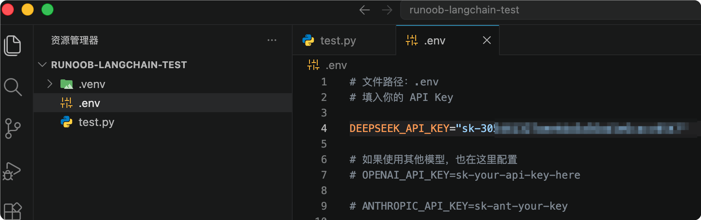
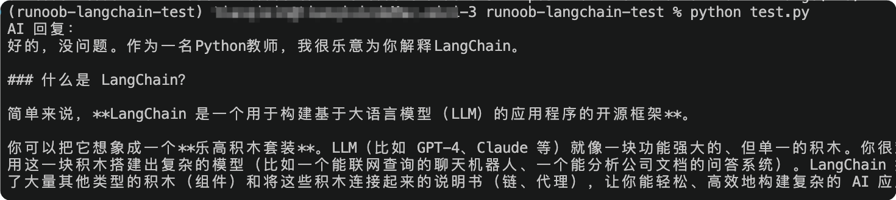

LangChain と DeepSeek の統合
この章では、LangChain で DeepSeek チャットモデルを統合して使用する方法を説明します。
を通じてlangchain-deepseek拡張パッケージにより、開発者は DeepSeek が提供する大規模言語モデルサービスにすばやく接続できます。
DeepSeek モデルは、公式ホスト型 API に加えて、Ollama、Fireworks、Together などのプラットフォームを介したローカルまたはサードパーティによる推論デプロイにも対応しています。
公式 API に加えて、Coding Plan/Token Planプランを通じて DeepSeek、Kimi、GLM、Doubao、MiniMax などの主要な大規模モデルに直接接続でき、各社の API を個別に購入する必要はありません。
DeepSeek の紹介
DeepSeek はオープンソースの大規模言語モデルシリーズで、チャット、推論、コード生成などの機能をサポートしています。
LangChain では、DeepSeek は主にChatDeepSeekクラスを使用して呼び出されます。
統合情報：
| 項目 | 説明 |
|---|---|
| クラス名 | ChatDeepSeek |
| インストールパッケージ | langchain-deepseek |
| ステータス | Beta（ベータ版） |
| JavaScript 対応 | 是 |
| Python 対応 | 是 |
モデル機能のサポート：
| 機能 | サポート状況 |
|---|---|
| ツール呼び出し（Tool Calling） | ✅ サポート |
| 構造化出力（Structured Output） | ✅ サポート |
| 画像入力 | ❌ 非サポート |
| 音声入力 | ❌ 非サポート |
| 動画入力 | ❌ 非サポート |
| トークンのストリーミング出力 | ✅ サポート |
| ネイティブ非同期呼び出し | ✅ サポート |
| トークン使用統計 | ✅ サポート |
| Logprobs | ❌ 非サポート |
DeepSeek API は OpenAI/Anthropic 互換の API 形式を使用しています。設定を変更することで、OpenAI/Anthropic SDK を使用して DeepSeek API にアクセスしたり、OpenAI/Anthropic API 互換のソフトウェアを使用したりできます。
| パラメータ | 值 |
|---|---|
| base_url (OpenAI) | https://api.deepseek.com |
| base_url (Anthropic) | https://api.deepseek.com/anthropic |
| api_key | リンクをクリックして申請API key |
| model* | deepseek-v4-flashdeepseek-v4-prodeepseek-chat(2026/07/24 に非推奨予定)deepseek-reasoner(2026/07/24 に非推奨予定) |
langchain-deepseek のインストール
使用を開始する前に、DeepSeek の LangChain 統合パッケージをインストールする必要があります：
pip install -qU langchain-deepseek
DeepSeek API キーの設定
まず DeepSeek アカウントを登録し、API キーを作成する必要があります。まだお持ちでない場合は、先にhttps://platform.deepseek.com/api_keysAPI キーを作成してください。
通常は、python-dotenvを使用して、現在のディレクトリ内の.env設定ファイルを読み取ることをお勧めします。
pip install python-dotenv
現在のプロジェクトディレクトリに.envファイルを作成します：
.env ファイルの設定：
OPENAI_API_KEY="sk-xxxxxxxxxxxxxxxx"

Python で .env ファイルを読み取る：
完全な例
from dotenv import load_dotenv
# 加载当前目录 .env 文件
load_dotenv()
# 获取 API Key
api_key = os.getenv("DEEPSEEK_API_KEY")
print(api_key)
.env ファイルのパスを指定：.env ファイルが現在のディレクトリにない場合は、手動でパスを指定できます：
例
load_dotenv(dotenv_path="./config/.env")
LangSmith の設定（オプション）
LangChain の呼び出しチェーンのトレースとデバッグ機能を有効にする場合は、LangSmith API キーを設定できます：
例
os.environ["LANGSMITH_API_KEY"] = getpass.getpass(
"Enter your LangSmith API key: "
)
ChatDeepSeek モデルの作成
インストールが完了したら、ChatDeepSeekを使用してモデルを初期化できます：
例
from dotenv import load_dotenv
from langchain_deepseek import ChatDeepSeek
# 加载 .env
load_dotenv()
# 获取 API KEY
api_key = os.getenv("DEEPSEEK_API_KEY")
# 创建模型
llm = ChatDeepSeek(
api_key=api_key,
model="deepseek-v4-flash",
temperature=0,
max_tokens=None,
timeout=None,
max_retries=2
)
# 调用模型
response = llm.invoke("你好，请介绍 LangChain")
print(response.content)
パラメータの説明：
| パラメータ | 説明 |
|---|---|
| api_key | 申請した API キーを設定します。例: "sk-xxx" |
| model | モデル名を指定します。例: deepseek-v4-flash |
| temperature | ランダム性を制御します。低いほど結果が安定します |
| max_tokens | 生成する最大トークン数を制限します |
| timeout | リクエストのタイムアウト時間 |
| max_retries | 失敗後の最大再試行回数 |
また、init_chat_model()関数を使用して呼び出すこともできます：
例
from dotenv import load_dotenv
# 加载当前目录 .env 文件
load_dotenv()
from langchain.chat_models import init_chat_model
# 指定了 model，返回固定模型
model = init_chat_model("deepseek:deepseek-v4-flash", temperature=0.7)
response = model.invoke("介绍菜鸟教程 RUNOOB")
print(response.content)
DeepSeek モデルの呼び出し
次のサンプルでは、DeepSeek モデルにチャットメッセージを送信する方法を示します：
注意：ここではテストのため、API キーをテストファイルに直接記述しています：
llm = ChatDeepSeek( api_key="sk-xxx", # 设置你的 DeepSeek API Key model="deepseek-v4-flash" )実際の本番環境では、.envファイルに設定してください。
例
llm = ChatDeepSeek(
api_key="sk-xxx", # 设置你的 DeepSeek API Key
model="deepseek-v4-flash",
temperature=0,
max_tokens=None,
timeout=None,
max_retries=2
)
messages = [
(
"system",
"You are a helpful assistant that translates English to Chinese."
),
(
"human",
"I love programming."
),
]
ai_msg = llm.invoke(messages)
print(ai_msg.content)
上記のコードは英語を中国語に翻訳します。実行すると、モデルは翻訳結果を返します：
私はプログラミングが好きです。
対応している DeepSeek モデル：
| モデル | 用途 | 特徴 |
|---|---|---|
| deepseek-v4-flash | 汎用チャットモデル | Tool Calling と構造化出力に対応 |
| deepseek-v4-pro | 推論モデル（deepseek-v4-pro） | より強力な推論能力を持つが、Tool Calling には非対応 |
LangChain + DeepSeek の完全なテスト例
以下では、完全に実行可能な LangChain + DeepSeek のサンプルを示します。
テストファイルの作成
test.py ファイルを作成します：
完全な例
from langchain_core.messages import HumanMessage, SystemMessage
# =========================
# 配置 DeepSeek API Key
# =========================
apiKey = "sk-xxx" # 设置你的 DeepSeek API Key
# =========================
# 创建 DeepSeek 模型
# =========================
llm = ChatDeepSeek(
api_key=apiKey,
model="deepseek-v4-flash",
temperature=0.7,
max_tokens=1024,
timeout=60,
max_retries=3
)
# =========================
# 构造聊天消息
# =========================
messages = [
SystemMessage(
content="你是一名专业 Python 教师。"
),
HumanMessage(
content="请解释什么是 LangChain，并给出简单示例。"
)
]
# =========================
# 调用模型
# =========================
response = llm.invoke(messages)
# =========================
# 输出结果
# =========================
print("AI 回复：")
print(response.content)
ターミナルで実行：
python test.py
出力は以下のとおりです：

コードの説明：
| コード | 役割 |
|---|---|
| ChatDeepSeek | LangChain の DeepSeek チャットモデルクラス |
| SystemMessage | システムプロンプト。AI の役割を設定するために使用 |
| HumanMessage | ユーザー入力メッセージ |
| llm.invoke() | DeepSeek モデルの呼び出し |
| response.content | AI が返した内容を取得 |
deepseek-v4-pro 推論モデルの使用
LangChainはDeepSeekのストリーミング出力をサポートしており、deepseek-v4-pro推論モデルを使用する必要があります：
例
from langchain_core.messages import HumanMessage, SystemMessage
# =========================
# DeepSeek API Keyを設定
# =========================
apiKey = "sk-xxx" # あなたのDeepSeek API Keyを設定
# =========================
# DeepSeekモデルを作成
# =========================
llm = ChatDeepSeek(
api_key=apiKey,
model="deepseek-v4-pro",
temperature=0.7,
max_tokens=1024,
timeout=60,
max_retries=3
)
for chunk in llm.stream("Pythonを紹介してください"):
print(chunk.content, end="", flush=True)
PromptTemplate の使用
PromptTemplateを組み合わせてPromptを動的に生成します：
例
from langchain_core.prompts import ChatPromptTemplate
# =========================
# DeepSeek API Keyを設定
# =========================
apiKey = "sk-xxx" # あなたのDeepSeek API Keyを設定
# =========================
# DeepSeekモデルを作成
# =========================
llm = ChatDeepSeek(
api_key=apiKey,
model="deepseek-v4-pro",
temperature=0.7,
max_tokens=1024,
timeout=60,
max_retries=3
)
prompt = ChatPromptTemplate.from_template(
"{topic}について詳しく説明してください"
)
chain = prompt | llm
response = chain.invoke({
"topic": "Transformer"
})
print(response.content)
よくあるエラー
| エラー | 原因 | 解決方法 |
|---|---|---|
| 401 Unauthorized | API Keyエラー | DEEPSEEK_API_KEYを確認 |
| ModuleNotFoundError | 依存関係が未インストール | pip installを実行し直す |
| Rate Limit | リクエスト頻度が高すぎる | リクエスト頻度を下げる |
| Timeout Error | リクエストタイムアウト | timeoutパラメータを追加 |
推奨プロジェクト構成
プロジェクト構成
│
├── app.py
├── requirements.txt
├── .env
├── prompts/
├── data/
└── vector_db/
requirements.txt の例
例
langchain-deepseek
python-dotenv
参考ドキュメント
- LangChain DeepSeekドキュメント： https://python.langchain.com/docs/integrations/chat/deepseek/
- DeepSeek公式サイト： https://www.deepseek.com/
- LangChain公式サイト： https://www.langchain.com/
- LangSmith： https://smith.langchain.com/
クリックしてノートを共有
ノートは本記事の内容を拡張したものである必要があります！
記事投稿はこちらをクリック
登録招待コードの取得方法
ノートを共有する前にログインが必要です！
登録招待コードの取得方法